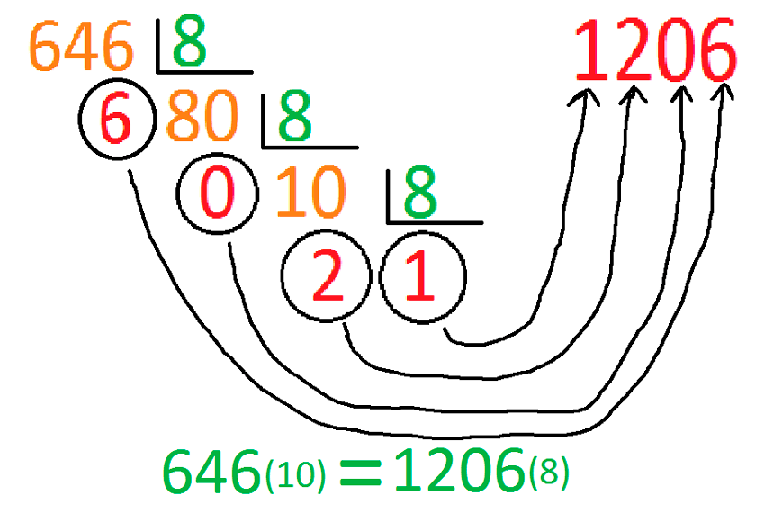
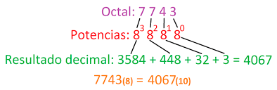
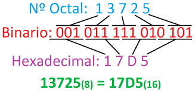
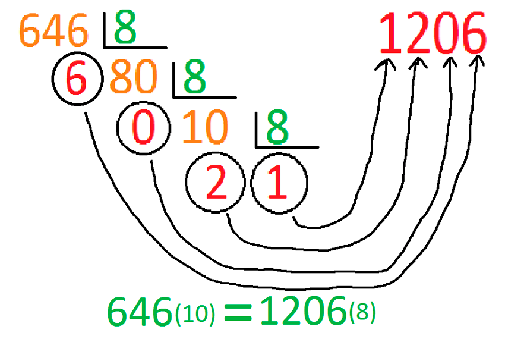
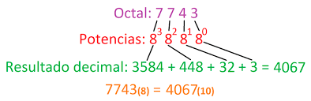
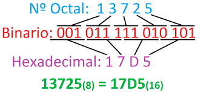

De decimal a octal:

De octal a decimal:

De octal a binario y de octal a binario:

De decimal a octal:

De octal a decimal:

De octal a binario y de octal a binario:

Licenciado bajo la Licencia Creative Commons Reconocimiento Compartir igual 4.0